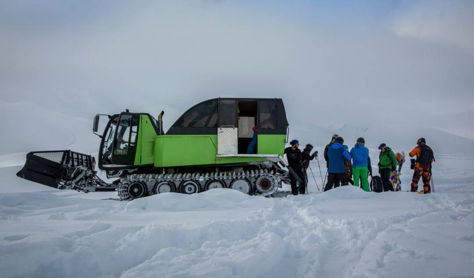

These winter weeks are for nothing other than chasing untouched, deep, Kyrgyz powder!
Here we divide week for two radically different spots of the country where we get cat assisted first part of the trip and human powered ski touring trip in the second.
Our tree full days are based in Suusamyr mountains, Tien Shan, in the three hours driving away to the South-west of the capital Bishkek, where is the one and only CatSkiing operation in Kyrgyzstan. Super cozy lodge sits at an altitude 2200m and has one of the best cat skiing tenures in whole Kyrgyzstan, much of which is still waiting to be explored. Snowcat will be assisted till the floor of circ from where we can either touring our day out for further tops or lapping it on the slopes below, which has been scouted down by our guides like their backyards.
One and half – two meters of snow blankets in unity with a coldest temperature of the country in this area turn local snowpack into the real unique bottomless powder.
After epic freeride experience in Suusamyr itinerary leads you up into the famous Jyrgalan district. Trough solid eight hours driving day you will turned up in the totally different zone, climate, terrain and society. This small settlement sits in the trees at an altitude of 2400m which was founded by Soviet government as a coal mine back in 1936.
Here our guests are will be provided with a finite skiers lodge at the upper edge of the village with warm, cosy house where is two (bed) rooms, one loby (library) room,. Two separate (with hot and cold running water) bathrooms. One traditional felt covered Yurt (optional sleeping area). One dining Yurt. Two outdoor terraces. Fire pit. Massive backyard for sunset skiing and lots of midnight stars for another three full ski days.
This exceptional spot gives immediate access to the fall line of Kyrgyz five star off-piste skiing in all direction right from the front door of the house. Local bottomless powder blanketing rows of epic steep ranges, mellow glides and wide open bowls offering 400 to 1000 meters of vertical drops every run.
In Jyrgalan village you will have a six different ski zones featuring sweet selection of all aspects alpine for skiing steep with possible first descents in a good condition with blue bird days and massive backyard with open tree line for shredding powder and stay independent on the weather and snow conditions.
DETAILS:
Location: Central Suusamyr Too Range, Chyi province, North Kyrgyzstan Eastern Terskey Ala-Too Range, Issyk-Kul province, North Kyrgyzstan
Elevation: The lodge in Suusamyr district situated at 2200m in the surrounding of the peaks over 4000m Our base in Jyrgalan sits at 2400m the highest point of the trip is might be the 3800m peaks
Season/Days: Our season starts from late December and stretches till mid March. The groups will have 8 days in KG in total. 6 full ski days in two different zones. 2 days for road trip between Suusamyr-Bishkek-Karakol-Jyrgalan
Access: You don’t have to worry about complicated accesses. All the guests and their luggages will be transferred right to the front door of the lodges by vehicles. On the morning of the lodge to lodge touring day you just pack your stuff and it will wait for you at the next destination.
FOOD:
Breakfasts: Are starts with a coffee which ends with omelettes, french toasts, pancakes, burritos, porages and lots of sweets
Lunches: Packed lunchboxes for the field
Apres ski: You are welcome to our dining yurt anytime especially after ski days to hang there for some tea with bred and cheese/meet slice, where we pull out the maps and discuss the routes for further days.
Dinners: Lagman (Meat and vegetables with spicy sauce on top of a hand-stretched noodles). Plov (Rice with mutton and vegetables). Kuurdak (Fried beef/lam or chicken with potatoes). Shorpo (Soup with chunks of vegetables and lam). Oromo (vegetables and mints rolled in the pasta cooked on steam) Besh barmak (Lam, noodles, onions with a soup of a mutton). Dymdama (Vegetables with beef covered by cabbage and steamed in Kazan). Almost all the meals are have ability to be cooked as a vegetarian one.
Drinks: Unlimited Tea, French press coffee, Home made fruit juice
REQUAREMENTS:
Experience: Our require for all the members of the group is at least two winter of backcountry ski touring experience and level one avalanche safety course.
Group size: 6 person min – 12 person max. For all groups our services are works privately. We don’t like mess in our bases and we never mix 2 different groups in one. If the number of the guests are less than 6 either more than 12, shoot us an email for discussing for how we roll in that case
Insurance: Every one who joining us for skiing in KG should have a personal MED-EVAC insurance which can be easily paired with Kyrgyz mountain rescue service.
Gear: Fat skis (115mm-min) or split-boards (strongly recommended) for Kyrgyz dry snowpack, whole structure of avalanche safety gear: float bag (strongly recommended), transeever (must), shovel (must), probe (must).
Camping: Bring everything what you would bring if you are going for a winter camping, except tents and kitchen needs.
PRICE:
Group of 6-12: 1350 $/person/tour
Price includes:
- Kyrgyz Tours Guides (lead guide + tail guide)
- Airport transfers
- Roundtrip transfer between Bishkek-Karakol
- Hotel in Bishkek/lodging and meals in Karakol
- 4x4 transport between Karakol –Trail head lodges
- Yurt base camp + lodge at the village with all meals and drinks
- Chief chef and lodge man
- One satellite phone for the crew
Price includes:
- Visa support (Kyrgyzstan offers a visa free policy for most countries)
- International flights to and from Bishkek
- Medical/evacuation insurance
Local Guide: See bio's of our guides.
DAY PLANS:
Meeting day/Day 1
International airport Manas – Bishkek – Too Ashu pass - Suusamyr. Our private vehicle which picks you up in the airport will get you to the Bishkek for an early breakfast than approaching the lodge in Suusamyr valley. As soon as we organized in the area we are out for a avalanche safety practice and reading the snowpack which ends up with almost full day skiing.
Day 2-3
Day two is the Day! Now you are more or less ready to get deeper and make your laziness hate you!
Day 4
Following three days catskiing experience, our this midweek day will provided with long “lodge to lodge” driving day. We will change the trailhead office trough crossing the 550km with some food and eagle performance stops on the way. Evening of a day we will organized in karakol town.
Day 5-7
After early breakfast it will take an hour driving till the Jyrgalan village where we will live another three ski touring days but much more terrain to explore.
Last day
This day will start quite early as we have to drive to the Bishkek which is pretty long but not means boring as we still have a plan to stop on the way and dip in the open air hot springs in the north shore of the lake. According the time left by arriving in the Bishkek we might run into the another stunning cultural evening at colorful Osh Bazaar.
Departure Day
Early transfer to airport.
Booking: Shoot us an a e-mail for additional informations and booking requirements.